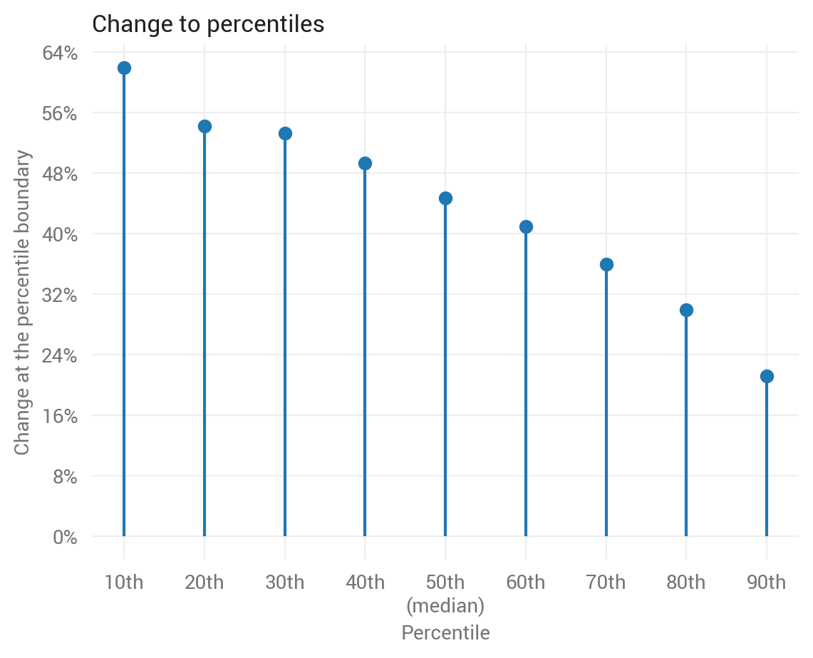
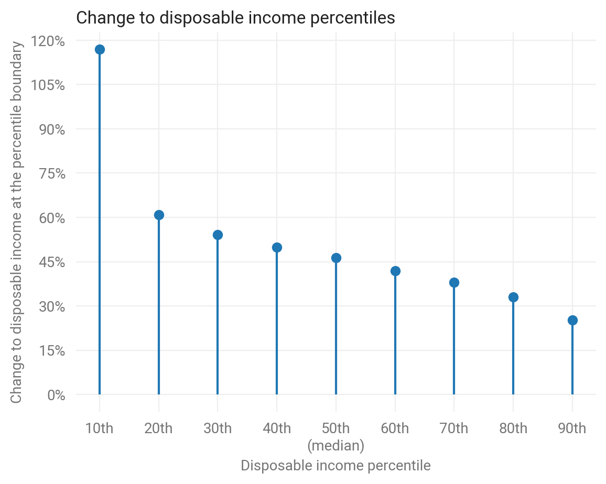
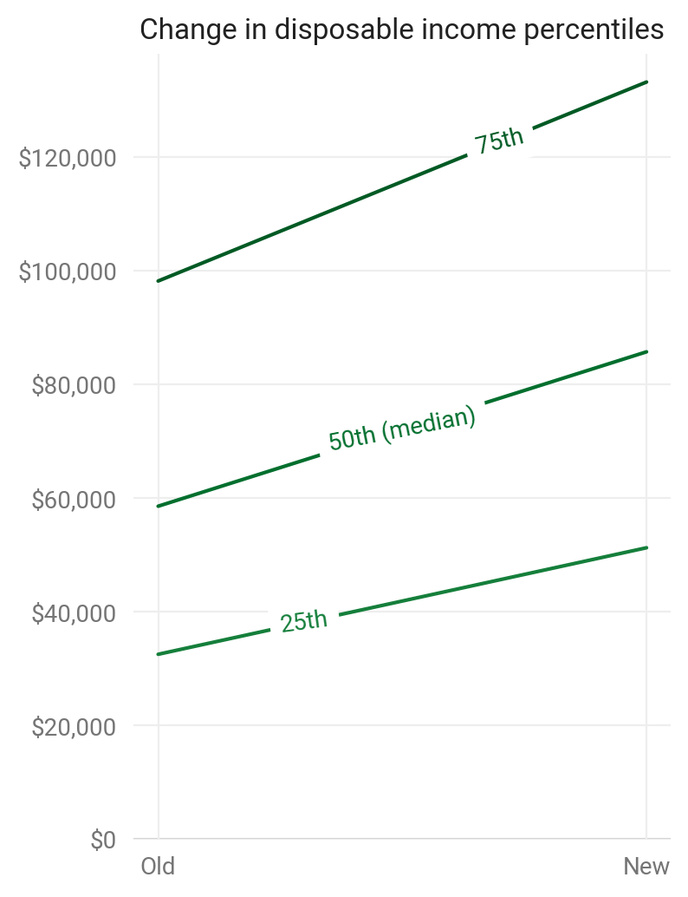
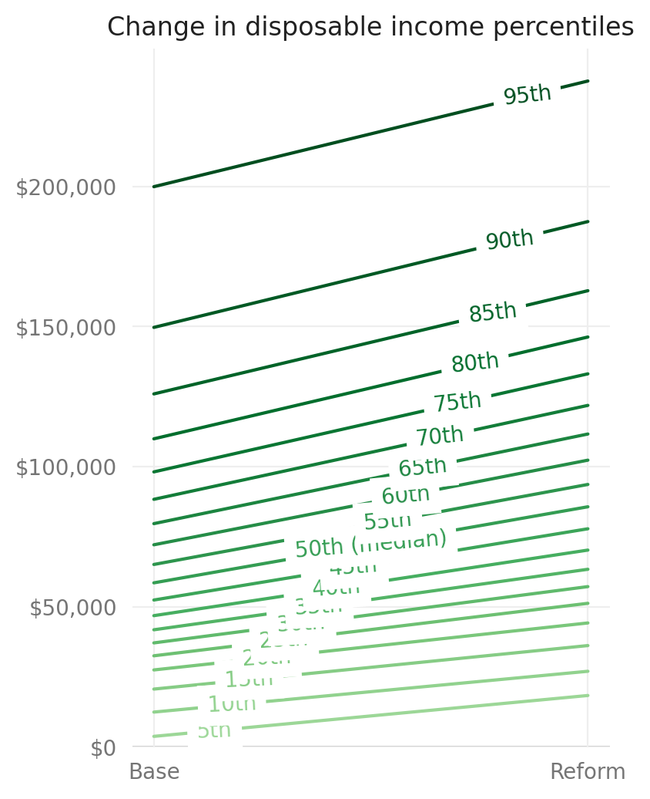

microdf charts¶
This example requires taxcalc to be installed.
Setup¶
import numpy as np
import pandas as pd
import matplotlib.pyplot as plt
import microdf as mdf
mdf.set_plot_style()
/home/runner/work/microdf/microdf/microdf/style.py:24: MatplotlibDeprecationWarning:
The createFontList function was deprecated in Matplotlib 3.2 and will be removed two minor releases later. Use FontManager.addfont instead.
fm.fontManager.ttflist += fm.createFontList(["Roboto-Regular.ttf"])
Prepare data¶
base = mdf.calc_df(group_vars=['expanded_income', 'MARS'],
metric_vars=['aftertax_income', 'XTOT'])
reform = base.copy(deep=True)
UBI_PP = 10000
reform['ubi'] = reform.XTOT * UBI_PP
reform['aftertax_income'] = reform.aftertax_income + reform.ubi
mdf.add_weighted_metrics(reform, 'aftertax_income')
Charts¶
Change to income percentiles¶
ax = mdf.quantile_chg_plot(base.aftertax_income, reform.aftertax_income,
base.XTOT_m, reform.XTOT_m)
plt.show()
findfont: Font family ['sans-serif'] not found. Falling back to DejaVu Sans.
findfont: Font family ['sans-serif'] not found. Falling back to DejaVu Sans.
Percent change to income percentiles¶
mdf.quantile_pct_chg_plot(base.aftertax_income, reform.aftertax_income,
base.XTOT_m, reform.XTOT_m)
plt.show()

Make the title and labels more descriptive to this data.
mdf.quantile_pct_chg_plot(base.aftertax_income, reform.aftertax_income,
base.XTOT_m, reform.XTOT_m)
# Note: Must set `loc='left'`, otherwise two titles will overlap.
plt.title('Change to disposable income percentiles', loc='left')
plt.xlabel('Disposable income percentile')
plt.ylabel('Change to disposable income at the percentile boundary')
plt.show()

Other percentiles and labels¶
mdf.quantile_chg_plot(base.aftertax_income, reform.aftertax_income,
base.XTOT_m, reform.XTOT_m,
q=np.arange(0.25, 1, 0.25),
label1='Old', label2='New')
plt.show()

mdf.quantile_chg_plot(base.aftertax_income, reform.aftertax_income,
base.XTOT_m, reform.XTOT_m,
q=np.arange(0.05, 1, 0.05))
plt.show()
